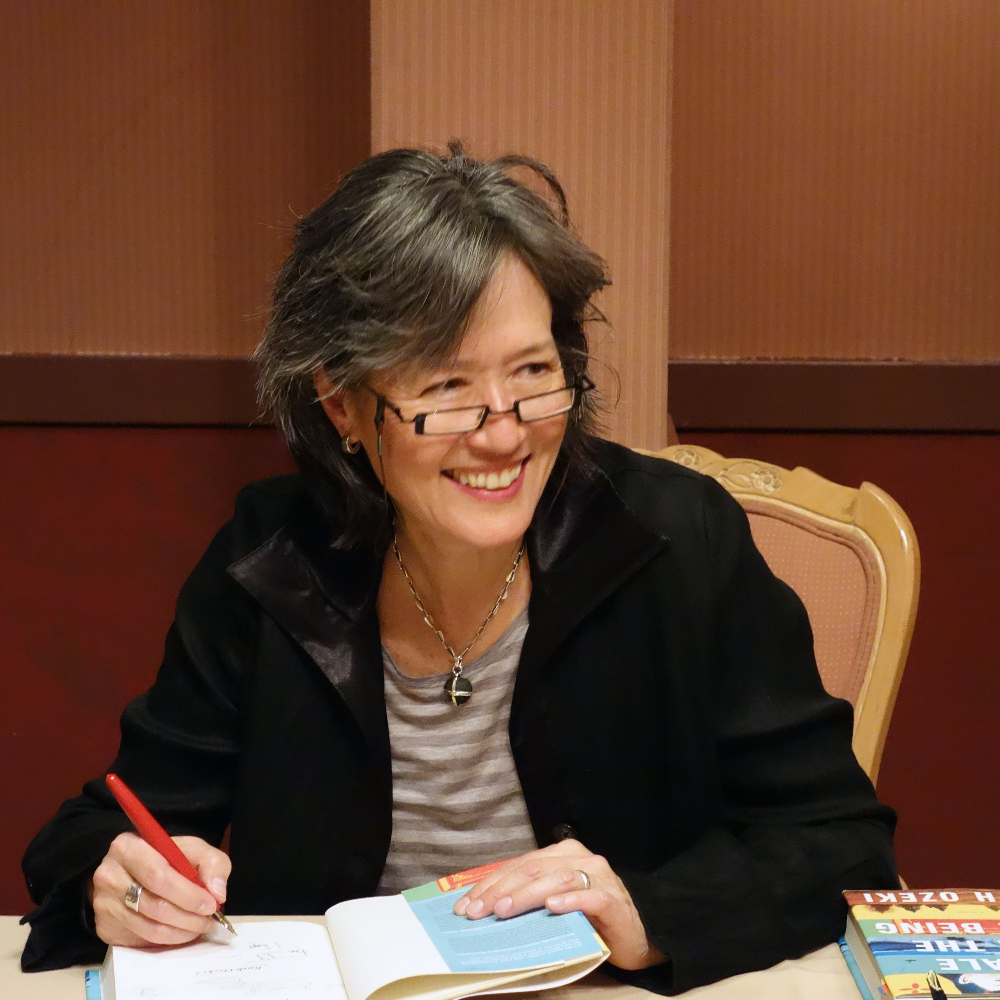

Ruth Ozeki and Halving the Bones (1995)

Personal Information
Movie Information
Behind-the-Scene
- Ethnicity: American, Canadian, Half Japanese
- Occupation: Novelist, Filmmaker, Professor, Zen Buddhist Priest
- Birth: New Haven, Connecticut, 1956
- Education: Smith College (BA); Nara University of Education (Classical Japanese literature)
- Residence: New Haven, Kyoto, Western Massachusetts, New York, British Columbia
- Title: Halving the Bones
- Where to watch: Vimeo
- Movie info:Halving the Bones is a 1995 film by Ruth Ozeki, blending documentary and fiction to explore themes of family, memory, and cultural identity. The film follows Ruth, a half-Japanese filmmaker, as she attempts to reconnect with her mother by delivering her grandmother's bones, leading to a profound exploration of her family's history and her own sense of identity. The film is known for its innovative use of home movies, narrative storytelling, and documentary footage.
- Based on: The film is based on Ruth Ozeki's personal experiences and family history, particularly her relationship with her Japanese grandmother and her mother. It delves into the cultural and generational gaps within her family. However, this film is not 100% factual; it is a blended version of factuality and fictionality.
- Awards:Sundance Film Festival, International Documentary Association Award Nomination, Montreal World Film Festival, New York/San Francisco and Seattle Asian American Film Festivals, Margaret Mead Film Festival
- Genre:A "half," neither documentary nor fiction
- Theme: She uses bones as a metaphor and explores themes of mixed blood.
Source
- Cultural background: She felt a sense of estrangement, acutely aware of her mother's "Japaneseness" and the feeling that "wherever I go, I'm always different."
Source
- Cultural background: She talks about people's views of her in Japan.
Source
- Concept development: In the film, the narrative reunites three generations. The film explores the concept of "halved."
Source
- Film technique: She made up a lot of things in the film. She fakes various voiceovers, home movies, and her grandmothers' diary. She talks about her choice of music for some scenes and the way to inform audiences about faux features.
Source
- Film technique: She uses a style partly factual and partly speculative.
Source
- Collaborator - Cinematographer: She works with Jim Fealy who has worked on commercials as well as the feature "The Doom Generation." She also mentions that Jim Fealy pretended to be her grandfather lurking in the palms with a new camera and a brand new wife when shooting one scene for the film.
Source
- Collaborator - Actor: She tells the story of how her mom comes in and talks in the film. What makes the film documentary.
Source
- Anecdote: Maybe a reason why she decided to do this film.
Source
- Anecdote: Anecdote about her relationship with her mother.
Source